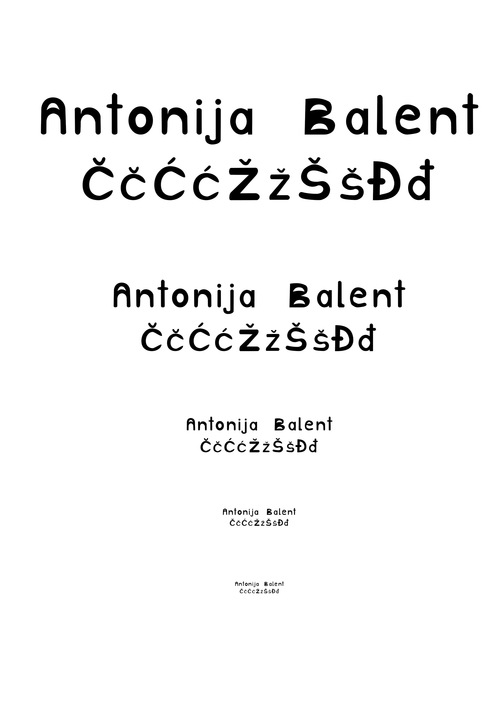
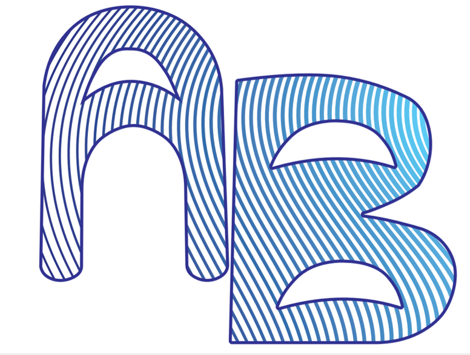
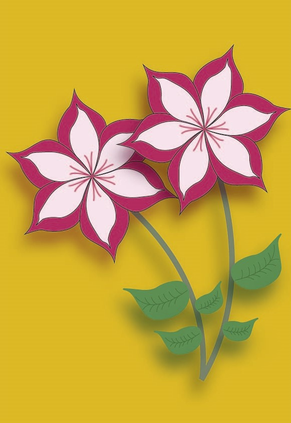
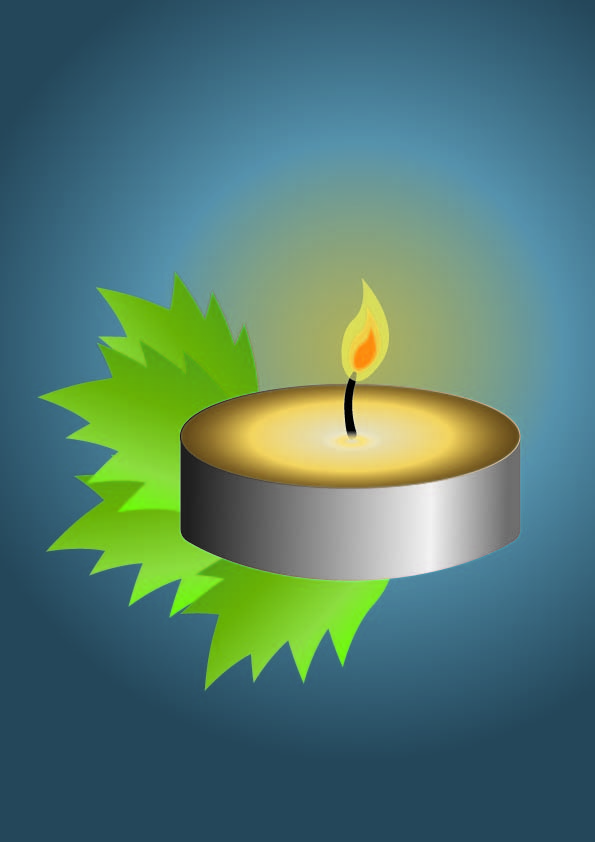
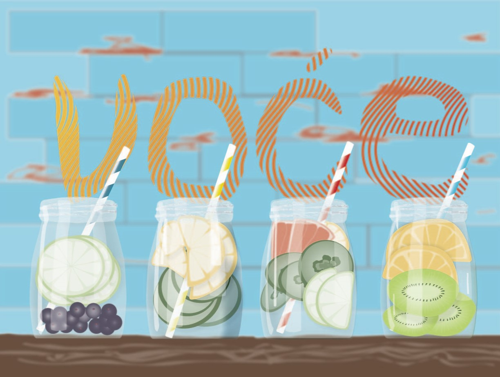
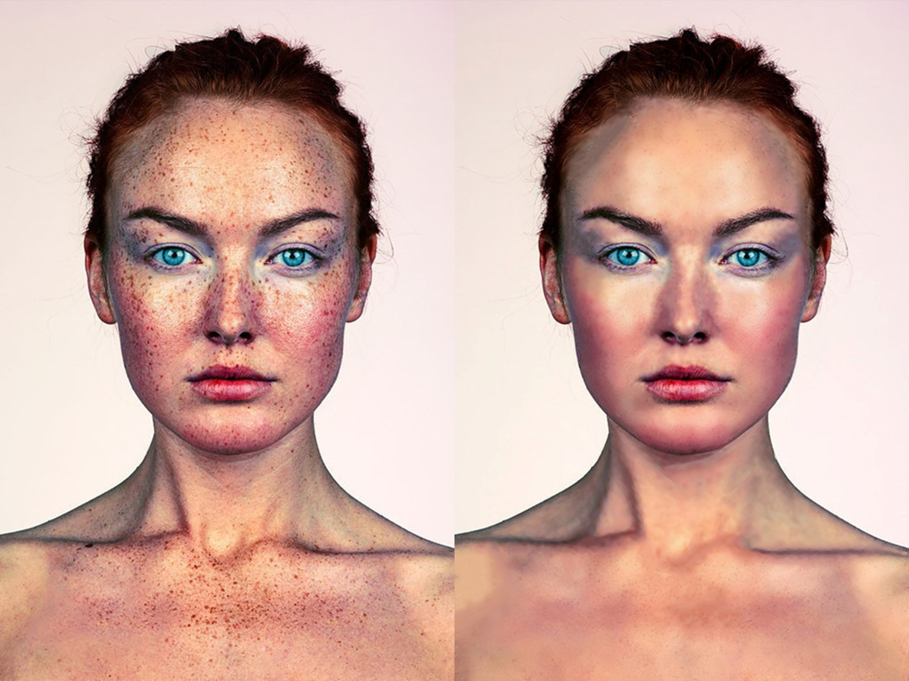
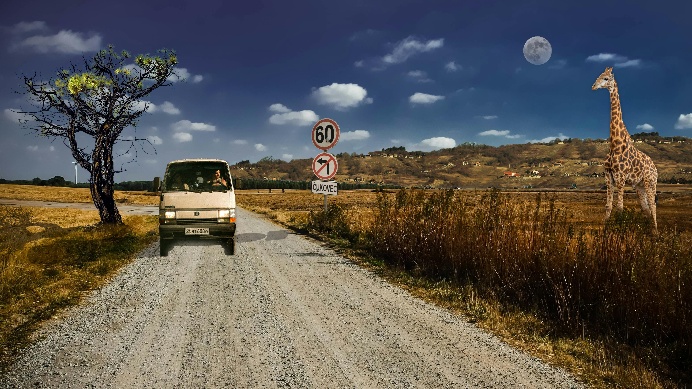
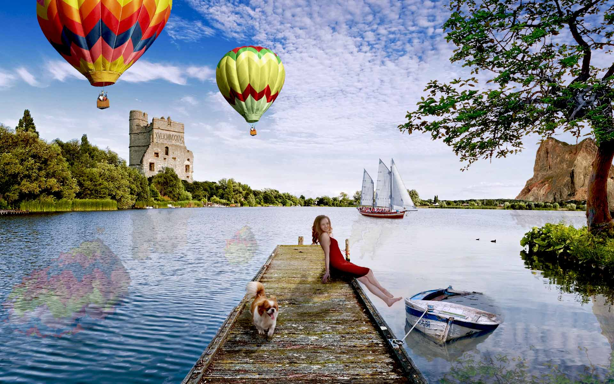

Antonija Balent
Moje vježbe iz kolegija Digitalni multimedij 1
Vježba 1 - font
U prvoj vježbi zadatak je bio napraviti vlastiti font. Točnije, dizajnirati slova svog imena i prezimena i palatale hrvatske abecede. Koristili smo programe FontForge i Fontographer. Konkretno moja vježba rađena je u FontForge-u.
Vježba 2 - Bezierova krivulja, precizno crtanje
U drugoj vježbi zadatak je obuhvaćao crtanje Bezierovih krivulja u vektorskim programima (Illustrator, Inkscape) unutar zadanog koordinatnog sustava, definiranje sivog tona za ispunu i obrub objekata uz specificiranje debljine linije, korištenje slojeva za organizaciju elemenata, crtanje objekata između postavljenih referentnih objekata te pretvaranje teksta u objekte uz izrezivanje maski.
Vježba 3 - boja, transformacije
Zadatak je bio izraditi primjer koji sadržava objekte nacrtane alatom Pen, bilo kao konture odabrane slike predloška po vlastitom izboru ili slobodno nacrtane bez predloška. Koristili smo tehnike dupliciranja s tipkom Alt, stvarali smo nove grupe boja (Swatch). Također smo koristili rotaciju, skaliranje, transparentnost i multipliciranje oblika kako bismo postigli željeni efekt i raznolikost unutar primjera.
Vježba 4 - gradijenti, transparencija
Četvrta vježba obuhvaćala je kreiranje vlastitog složenog objekta u kojem smo korisitili tehnike spajanja i izrezivanja objekata na kojima smo zatim primijenjivali različite vrste gradijenata (linearni, radijalni, mesh...) i transparencije.
Projektni zadatak 1
Nakon četiri vježbe uslijedio je projektni zadatak koji je obuhavćao sve tehnike korištene u te četiri vježbe. U zadatku smo trebali kreirati vlastiti font za riječ "Voće" i jednostranični dokument veličine A3 u Adobe Illustratoru ili Inkscape-u. U dokumentu smo koristili Bezierove krivulje za iscrtavanje slike prema zadanom predlošku, slika je trebala uključivati sve elemente navedene u predlošku. Također, unutar slike, smisleno se trebala uklopiti riječ "Voće" koristeći font koji je bio prethodno kreiran. Posebno smo naglasili korištenje interpoliranih linija unutar fonta, čije su boje pratile ugođaj boja slike. Dodatno, interpolacija/blend mogla se koristiti i na drugim elementima, uz mogućnost dodavanja vlastitih elemenata.
Vježba 5 - retuširanje
Koristili smo Photoshop, GIMP ili ostale programe za manipulaciju slikama. U zadatku smo prvo provodili uklanjanje manjih pozadinskih šumova zamućivanjem. Zatim smo koristili tehniku kloniranja za popravke manjih područja. Nakon toga smo kopirali veće dijelove slike kako bismo ih premjestili ili duplicirali. Slijedilo je lokalno posvjetljivanje ili zatamnjivanje određenih dijelova slike radi postizanja željenog efekta. Na kraju smo primijenili globalnu korekciju tonova kako bismo uskladili cjelokupnu sliku.
Vježba 6 - koloriranje
U vježbi smo prolazili kroz tehnike neinvazivnog koloriranja slike koje se mogu primijeniti na crno-bijele slike ili slike u boji kojima želimo promijeniti nijansu određenih područja. Koristili smo selekciju kako bismo odabrali željene dijelove slike i stvorili maske kojima skrivamo ili otkrivamo efekte kolorizacije. Boja se aplicirala na zaseban sloj kako bismo sačuvali originalne tonove i omogućili lakše promjene u kasnijim fazama obrade slike. Selekcije smo izvodili i popravljali ručno, umjesto korištenja automatskih alata, kako bismo preciznije izdvojili željenu boju iz pozadine, što je ključno za kvalitetu slike. Također smo trebali izabrati vlastitu fotografiju, na kojoj smo mi, i kolorirati ju sa najmanje tri boje ili više, i napraviti kolaž s pet primjera iste fotografije sa različitom kolorizacijom.

Vježba 7 - fotomontaža
U ovoj vježbi smo se bavili različitim tehnikama selektiranja jednostavnih i složenih oblika. Koristili smo jednostavne tehnike selekcije za alate koji omogućuju selektiranje poligona i oštrih rubova objekata, dok su složenije tehnike uključivale selekciju putem kanala slike ili crtanje maski brush i eraser alatima u quick mask modu. Također smo učili kako izraditi i uklopiti sjene objekata koje smo izrezali, kao i kako korigirati boje za postizanje realističnijeg izgleda. Trebali smo obraditi zadane slike tako da u bazu umetnemo izrezane elemente iz drugih fotografija, koristeći sve tehnike opisane u video i pisanim uputama. Dodali smo barem tri elementa iz vlastitih fotografija. Zatim smo korigirali boje kako bismo uskladili elemente s originalnom scenom ili stvorili drugačije efekte.
Projektni zadatak 2
U ovom projektnom zadatku imali smo tri glavne faze. Prvo, radili smo s fotografijama iz prve skupine, iz kojih smo odabrali bazu unutar koje smo smještali elemente iz drugih skupina. Na baznoj fotografiji bilo je potrebno napraviti retuš oštećenja korištenjem prikladnih alata, a također je bilo moguće spojiti elemente iz dvije ili više baznih fotografija. Drugo, koristili smo fotografije iz druge skupine koje su sadržavale elemente za izrezivanje i unos u baznu fotografiju. Precizno smo selektirali željena područja i prenosili ih u baznu sliku te ih uklapali na najbolji mogući način. Iz ove skupine morali smo iskoristiti minimalno pet fotografija, dok maksimalan broj nije bio zadan. Svaku sliku koju smo obrađivali iz ove skupine spremali smo zajedno s njenim selekcijama. Dodatno, uz prvu i drugu skupinu, trebali smo iskoristiti minimalno tri elementa iz vlastitih fotografija koje se tematski uklapaju u projektni zadatak, a koje smo sami snimili. Na jednoj od tih fotografija morali smo biti mi. Maksimalan broj elemenata također nije bio zadan.
Vježba 8 - kinemagraf
U izradi vježbe koristili smo Photoshop ili GIMP za obradu statične slike i krajnji izvoz, dok smo obradu video isječka radili u Adobe Premiereu ili alternativnim programima kao što su Davinci Resolve ili Shotcut, koji imaju slično sučelje kao i Premiere. Zadatak je bio snimiti vlastiti kratki video ili pronaći besplatni video isječak sa neke stock baze i obraditi ga kao kinemagraf.

Vježba 9 - video obrada
U vježbi smo se bavili temama rezanja i spajanja video isječaka iz više izvora, primjenom video efekata, brisanjem i dodavanjem zvuka te dodavanjem i obradom teksta. Trebali smo izrezati dva video isječka (vlastita ili skinuta s nekog od besplatnih platformi) na drugačiji način nego što je opisano u uputama, dodati im barem tri nova efekta (npr. scale, rotation, efekti boja) te ubaciti jedan statični i jedan pomični tekst na različitim pozicijama, uključujući naše ime i prezime. Također smo trebali dodati drugačiji zvuk. Na kraju smo izvezli video u mp4 formatu.
Vježba 10 i 11 - web stranica u HMTL-u
Zadatak je bio kreirati stranicu index.html koja će sadržavati naslove prve i druge razine, gdje je na prvom naslovu trebalo biti moje ime i prezime, a na drugom opis stranice. Također, trebali smo dodati navigacijsku listu s najmanje tri linka koji vode na web stranicu, HTML dokument i PDF dokument. U paragrafu "O meni" trebalo je koristiti različite vrste označavanja teksta poput bolda, italic-a, quote-a i slično. Također, trebli smo dodati dvije liste - jednu uređenu i jednu neuređenu. Konačno, trebali smo kreirati drugi HTML dokument s multimedijskim elementima kao što su slike (optimizirane na manje dimenzije), videozapisi te zvuk.
MOJA HTML STRANICA